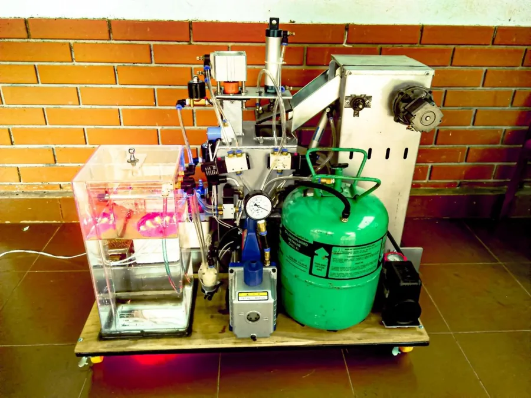
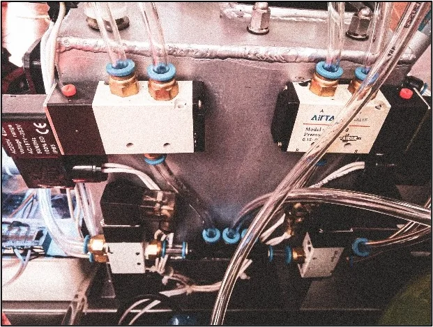

Pneumatics / 2019–20
Pneumatic wood stabilization
A high-school build that automated steps in a vacuum-and-pressure resin treatment for wood.

The build
I built a system to automate steps in impregnating wood with resin under vacuum and pressure. The prototype combined a treatment chamber, pneumatic valves, and electrical controls.
The fair
The project placed first at the 2020 provincial science and engineering fair.
From the build

